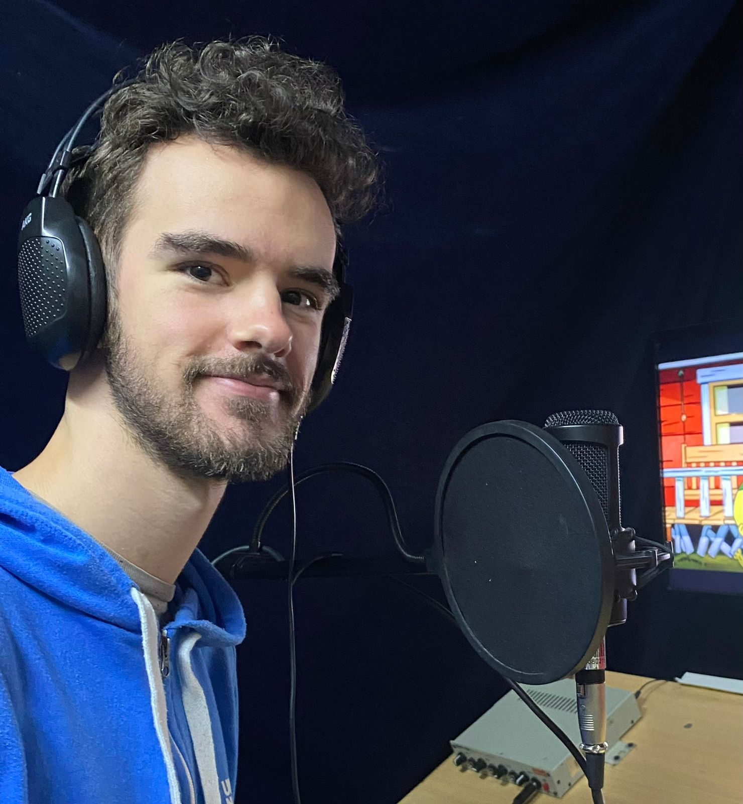

GoofyGomez's Masterlist
Recommended Works
Broken Future
Luz Noceda never got to say goodbye to the people she loved before she was stuck in the Human Realm. Fourteen years later, she has worked tirelessly to rebuild the portal that will take her back to the place she belongs. Alongside her apprentice, Alma Salvatore-Castilla, she will find her way back, come hell or high water.
Second slide label
Some representative placeholder content for the second slide.
Third slide label
Some representative placeholder content for the third slide.
Accolades
WORKS
60+
HITS
190.000+
WORD COUNT
775.000+
About Me
My name is Federico Gomez Kennel, AKA GoofyGomez. I am a 25-year-old voice actor from Argentina. I discovered my love for literature from a very young age, when my grandpa used to read Greek myth books to me before bed. I As I got older, I began reading more and more books in English to satisfy that need for adventure and fantasy, my two favorite genres. Going into my High School years, I participated in a number of Writing Competitions (winning some of them), which only fueled my passion for creating.
Read more
Top Comments
Thank you for writing your heart out; very much enjoyed it. When you put it like that, yeah, it's a little nuts. Never have I ever read anything as fast as I did this. My bookworm wife was very surprised too. The work warmed my soul. I look forward to your writing in the future (but no pressure :) ).
I loved Alma and Thalia (Thalma). They gave strong Lumity vibes which was awesome, and like you said, it must have been very difficult to execute without being cheesy or inorganic. I know that Alma was an OC from Mexfan12 but was Thalia as well? I hope I'm not bothering you too much, but I'm curious, how much would you say you developed them from the concepts from Mexfan12's work?
Thalia's loss of everyone in her life pre-Alma was so painfully heartbreaking, well-written, and developed. Alma and Thalia working together to raise Thalia's confidence and strengths was special. I loved her mentorship with Viney and her gift from Raine to develop her unconventional multitrack education. If you couldn't tell, her growth from scared, helpless orphan to a brave, powerful rebel-witch and partner of Alma was one of my favorite parts of this fic. I hope if things don't “work out” in chapter 36, she can find solace in what remains of her found family.
Thank you so much for your year of hard work. I'm both excited and terrified for tomorrow!